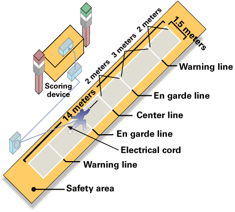
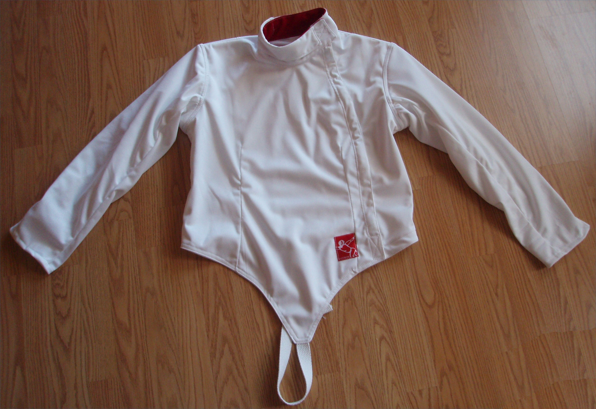
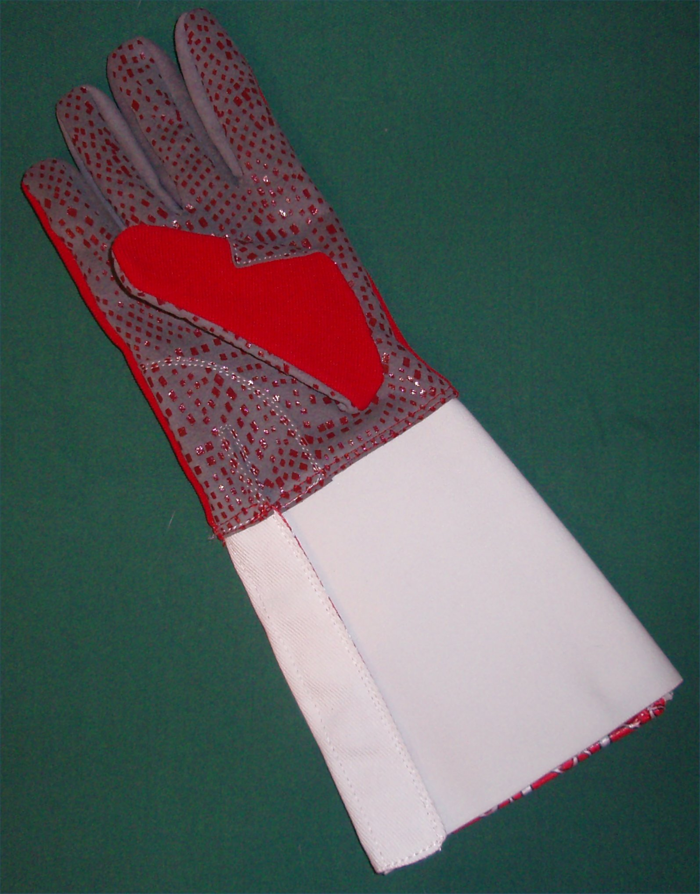
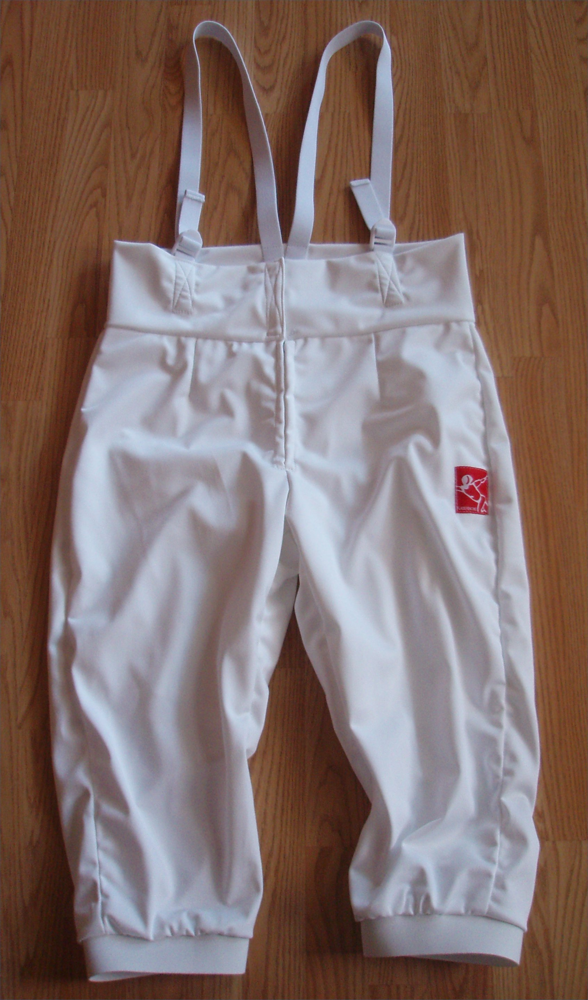
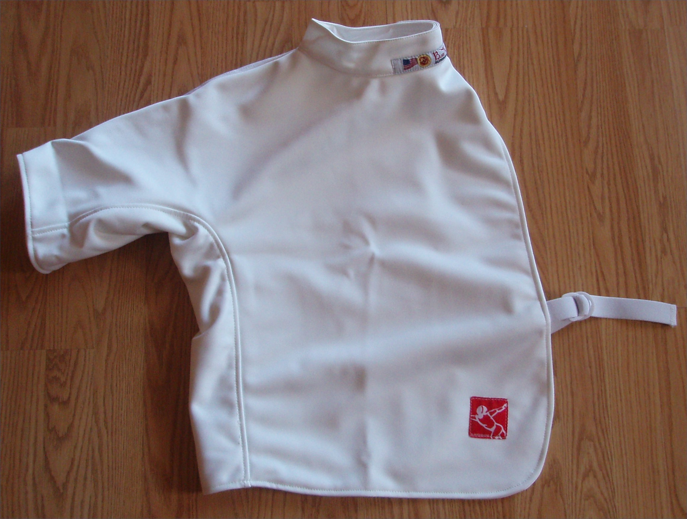
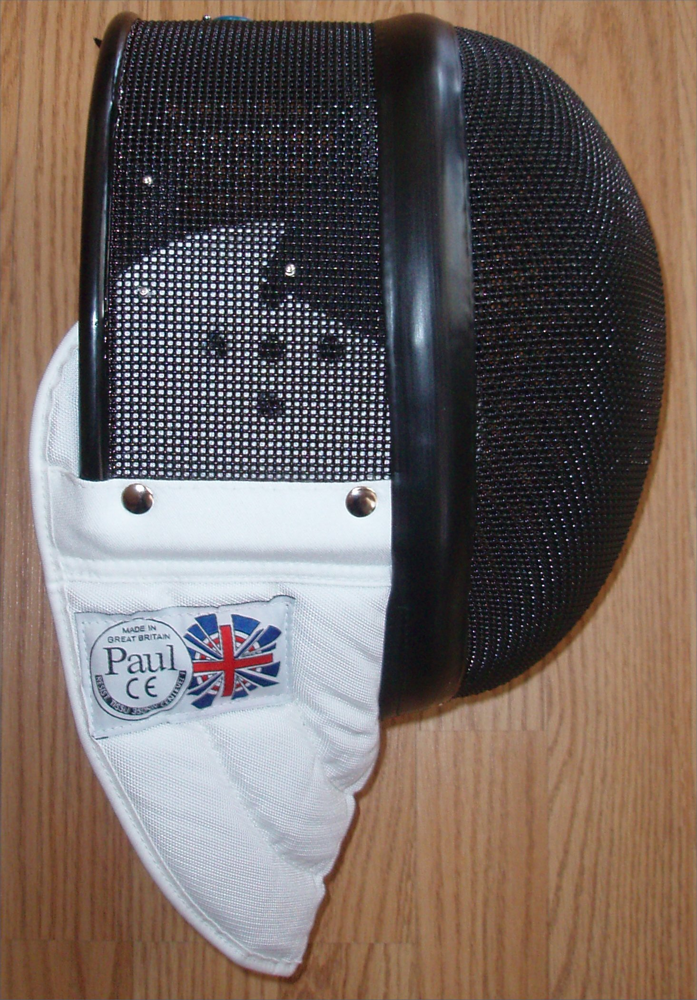
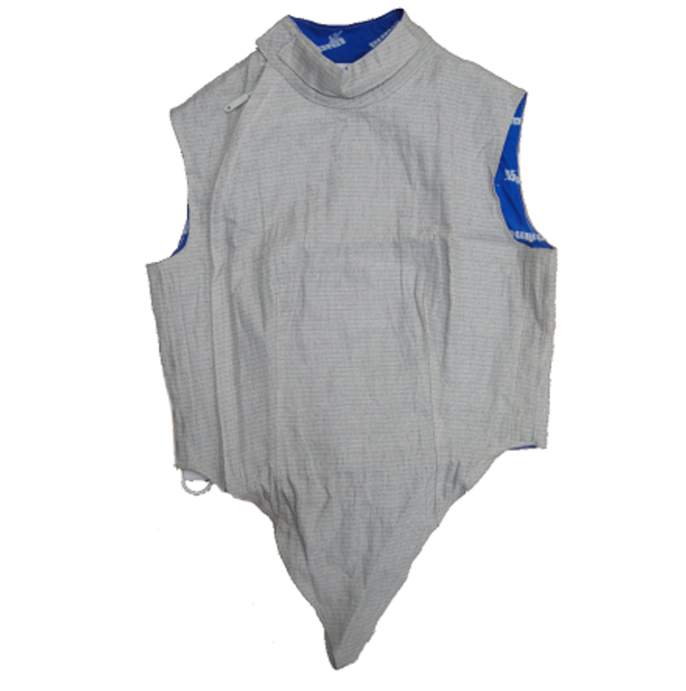

Fencing
How Does Fencing Work?
Fencing is a series of 3 combat sports involving Sabre, Foil, and Epée. Points are scored when the one fencer hits the other fencer. Fencing is one of the five activities which have been featured in every modern Olympic Games, the other four being athletics, cycling, swimming, and gymnastics. Most completive fencers specialize in only one of the three disciplines.
Fencers wear proactive equipment make of tough cotton or nylon. Kevlar was added to some pieces of the uniform (jacket, breeches, underarm protector, lame, and the bib of mask) following the death of Vladimir Smirnov at the 1982 world champions. The uniform consist of the Jacket, plastron, glove, breeches, socks, shoes, masks, chest protector, and lame. Usually, the fencing uniform is white.
The arena is a 14m long strip with a center line, en grade line, warning line, and end line. The En grade line 2 meters from the center, and the warning line is 3 meters from the en garde line, with the end line being 2 meters form the warning line. When one contacts the opponent, the fencers light illuminates showing the referee that a touch was scored.
The arena is a 14m long strip with a center line, en grade line, warning line, and end line. The En grade line 2 meters from the center, and the warning line is 3 meters from the en garde line, with the end line being 2 meters form the warning line. When one contacts the opponent, the fencers light illuminates showing the referee that a touch was scored.


Fencing Jacket
The fencing jacket protects the fencers form hits
The fencing jacket protects the fencers form hits

Fencing Glove
The fencing glove protects the fencer's weapon hand from injury
The fencing glove protects the fencer's weapon hand from injury

Breaches
Basically fencing shorts
Basically fencing shorts

Plastron
Provides a final level of protection form hits
Provides a final level of protection form hits

Mask
Proctects the head from hits
Proctects the head from hits

Lamé
Electrictly conductive material detects hits
Electrictly conductive material detects hits